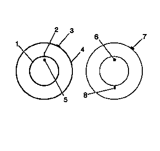
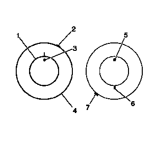

轮胎和车轮配装（矢量匹配）

注意:
在将轮胎重新安装至车轮上后，或者在更换了轮胎和/或车轮后，重新测量轮胎和车轮总成的跳动量，以确定跳动量是否减小到公差范围内。确保轮胎和车轮总成在重新安装到车辆前进行了正确平衡。
1.
车下测量轮胎和车轮总成的跳动量时，在轮胎上标记跳动高点（3）的位置。
2.
在气门杆（5）处的轮胎侧壁上作参考标记（2）。
•
务必将气门杆作为 12 点钟参考位置。
•
相对于气门杆的位置，确定高点（3）在车轮上的钟点位置。
3.
将轮胎和车轮总成安装到轮胎机上，然后扒下胎圈。此时，切勿将轮胎从车轮上拆下。
4.
将轮胎在轮辋上转动 180 度，使轮胎上的气门杆参考标记（8）相对于气门杆（6）位于 6 点钟位置。为了使轮胎在车轮上易于转动，可能需要润滑胎圈。
5.
给轮胎重新充气，并正确嵌入胎圈。
6.
将总成装在轮胎平衡机上，并重新测量跳动量。在轮胎上标记新的总成跳动量高点位置。
7.
如果总成跳动量减小并在公差范围内，则无需进一步采取措施。平衡轮胎和车轮总成，然后将总成安装到车辆上。参见以下内容：
•
轮胎和车轮总成平衡－车下
•
轮胎和车轮的拆卸和安装
8.
如果高点的钟点位置保持不变或接近高点（7）原来的钟点位置，并且总成的跳动量没有减小，则产生总成跳动问题的主要原因在于车轮。

9.
如果高点的钟点位置发生移动，但是总成的跳动没有减小，则执行以下步骤：
9.1
如果高点（7）的钟点位置现在位于或接近离原来高点的钟点位置 180 度的位置，则产生总成跳动问题的主要原因在于轮胎。
9.2
如果现在高点的钟点位置介于2个极端情况之间，则轮胎和车轮都是产生总成跳动问题的原因。沿顺时针和逆时针方向将轮胎再转动 90 度，以获得总成最小的跳动量。